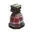
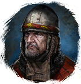

Арагонит
Предметы / Добыча
Открыть в интерактивной вики →
| Вес | 20 |
|---|---|
| Цена | 720 |
Описание
Компонент, используемый для изготовления

Большая Фляга Силы. Её создает
Нолл в Горах Колдов.| Ингредиент для изготовления Большой фляги силы. Изготавливает Нолл в Горах Колдов. |
Рецепт
Обмен
Где найти
- Медвежья пещера — путь: Лес Колдов → Медвежья пещера
Применение
|
Как добыть
| Сбор в локации: |